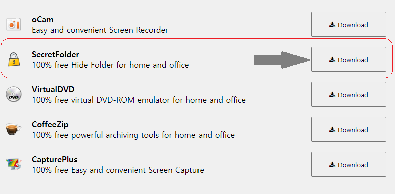
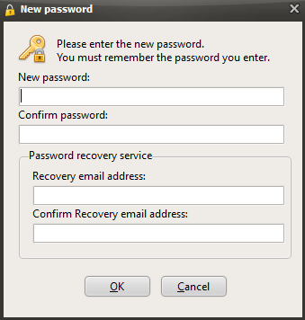
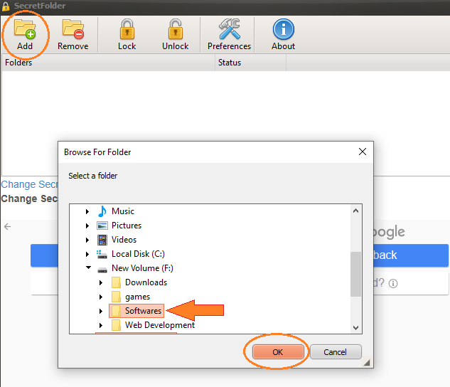
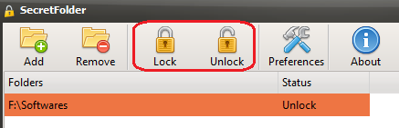

Are there any files on your computer or laptop that you wish to keep password protected and hidden from unauthorized access? For instance, you might have sensitive office data that you do not want your child to delete while playing games. In this article, I will introduce you to the most effective software that I have been using for several months to safeguard my confidential information by encrypting it, ensuring that it remains inaccessible to anyone else.
Secret Folder is a powerful tool designed to safeguard your private data from potential hackers. This software employs an encryption technique to secure the files of your choosing, which are then concealed from view. By doing so, even powerful malware like ransomware would be unable to search for the encrypted and hidden files. Additionally, Secret Folder can be utilized as a locker to restrict access to your files from others, with the ability to access them at your convenience. In the event that you forget your password, the software allows you to change it through email verification. This versatile software can lock and hide a wide range of file types, including images, audio files, documents, videos, compressed files, games, and other executable programs. You can lock and hide as many files as you need. Allow me to guide you through the process of using this remarkable software to lock your desired files.
After the software has been downloaded, simply click on the setup file and proceed with the installation process."
you can download Secret Folder from here.
After the completion of the installation process, the software will open automatically. If it does not open, you can manually launch it from the desktop icon.
Now, you can set your password and enter an email address to be used for password recovery in case you forget it.
Select the files you would like to lock by clicking on the "Add" button located in the top left corner of the software interface
After selecting the files, simply click on the file you have chosen and then on the "Lock" button. This will encrypt and lock the files, making them inaccessible without unlocking them through the software, which requires a password. To unlock the files, click on the "Unlock" button located right beside the "Lock" icon.
When you have forgotten your password, the software provides the option to reset it through email, as we previously discussed. You will receive a long text in the email which you can enter into the software to change the password. Please note that password recovery through email is limited to once every 24 hours. If you need to recover your password again, you will need to wait for a day before doing so.